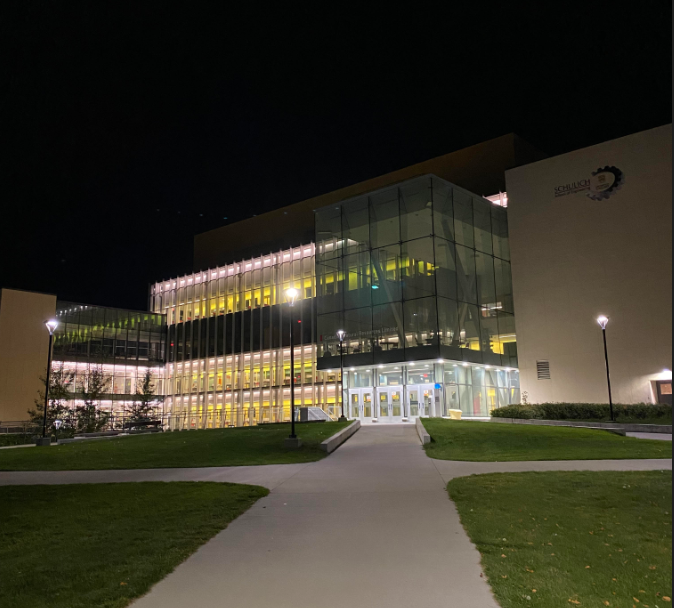

Picture of engineering building. Source: Juan's iphone
As a student I value reflecting on how I have changed and what I have learnt over the semester.
I am happy to say that this semester has been the most fun and benecificial to me as an engineer.
This semester we finaly got to do some hands on work with electrical components and took a very close
look at how they weorked. I was also able to apply a lot of the concepts from prior semesters and merge it with the new,
it felt like the past 1.5 years of school was preparing us for this semester.
Website design can be very tricky, specially when you had no experience like myself. I am glad that I
accepted the challenege to format my portfolio like this becuase I got to learn new programming languages like: HTML, CSS, and
JavaScript. I believe that this experience will benefit me greatly in the future becuase I will
being able to convey a message or showcase a product exactly how I want to, in this case in am showcasing
my projects and information about myself.
Were there a lot of bugs and nuances I had to work through?
Yes, but I was able to problem solve and surpass those obstacles by doing a lot of research and most importantly, having
patience.
My main takeaways:
• Learning HTML, CSS, and JavaScript
• Having a resume that will standout.
• Getting inspired to do more projects like this in the future.
What works best for me is having a detailed list for each day of the week consisting of:
- Shorter tasks
- Longer tasks
- Time frame
and also having a all of the dates for deadlines during that week. Having an organized list of
what needs to be dine each day has helped me stay on top of school and not have to cram everything
before an exam. While I am studying I like to take a 5 minute break in between hours. This has kept
met fresh, motivated to continue, and avoids the situation below.
Tired student. Source: https://studybreaks.com/college/5-study-break-activities-to-help-you-recharge-in-10-minutes/